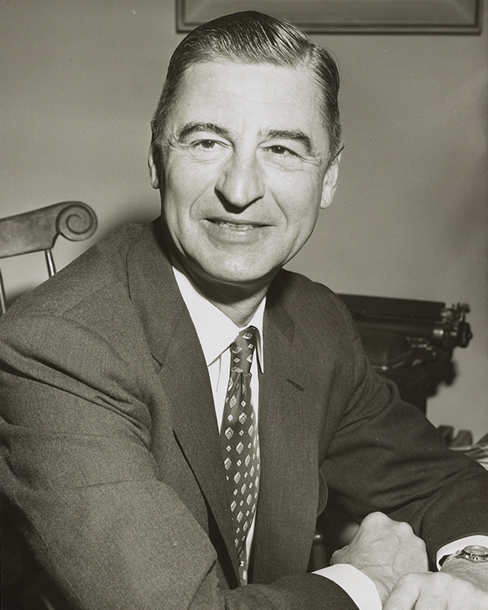

Dr. Seuss (Theodor Geisel)
“While Paris was being occupied by the clanking tanks of the Nazis and I was listening on my radio, I found that I could no longer keep my mind on drawing pictures of Horton The Elephant. I found myself drawing pictures of Lindbergh The Ostrich” -Theodor Geisel
Morgan Freeman

"I joined the Air Force. I took to it immediately when I arrived there. I did three years, eight months, and ten days in all, but it took me a year and a half to get disabused of my romantic notions about it." -Morgan Freeman
Elvis Presley
”The army teaches boys to think like men” -Elvis Presley
Arnold Schwarzenegger
Bob Ross
"I was the guy who makes you scrub the latrine, the guy who makes you make your bed, the guy who screams at you for being late to work. The job requires you to be a mean, tough person." -Bob Ross
J.R.R. Tolkien

“War must be, while we defend our lives against a destroyer who would devour all; but I do not love the bright sword for its sharpness, nor the arrow for its swiftness, nor the warrior for his glory. I love only that which they defend.” ― J.R.R. Tolkien, The Two Towers
Shawn Michaels (Michael Shawn Hickenbottom)
Gal Gadot

“You give two or three years, and it’s not about you. You learn discipline and respect.” -Gal Gadot
Theodore Roosevelt
"Nothing in this world is worth having or worth doing unless it means effort, pain, difficulty." -Theodore Roosevelt